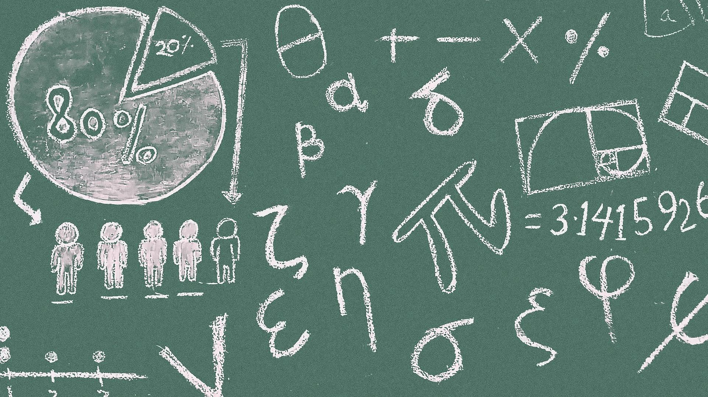

İLGİ ALANLARIM

FUTBOL
Boş zamanlarımda haftada en az 1 defa arkadaşlarımla birlikte halısaha maçı yaparım..
DERS ÇALIŞMA
Bölüm derslerime ayrıca önümüzdeki sene yazın giriceğim DGS sınavı için matematik çalışmayı ihmal etmiyorum..

Yüzme
En sevdiğim spor yaz aylarında çok sık, kış aylarında kapalı havuzlarda yapmayı çok severim..

OYUN OYNAMA
Her gün kafa dağıtmak için günde en az 2 saat oynarım azaltmam gerekiyor biliyorum ama şimdilik böyle..:D